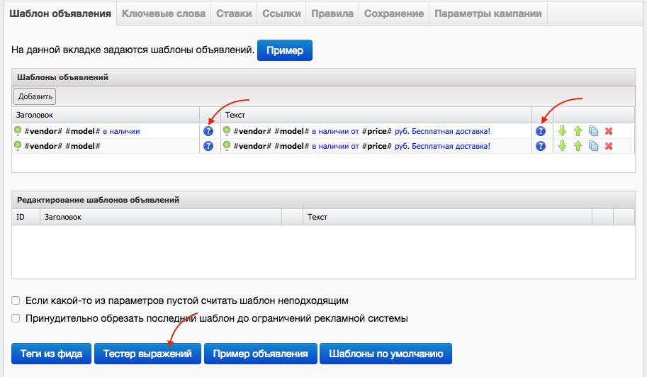
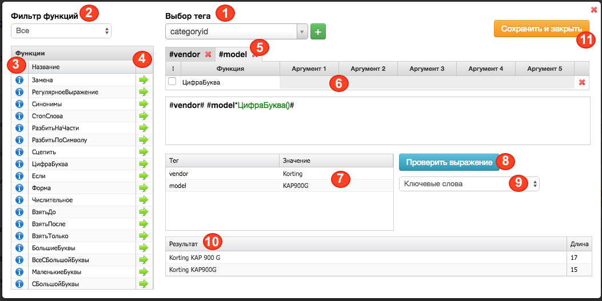

Область применения функций
Функции изменяют значение тегов из фида. Функции могут применяться к тегам во всех разделах кампании, где допустимо использовать теги:
- Шаблоны для ключевых слов (вкладка Ключевые слова)
- Шаблоны для текстов объявлений и заголовков (вкладка Шаблоны объявлений)
- Выражение для URL (вкладка ссылки)
- Шаблоны дополнительных ссылок (вкладка ссылки)
- Шаблоны для названия кампаний (вкладка настройки кампаний)
Синтаксис
Функции имеют строгий синтаксис. Ниже представлены основные требования к написанию функций:
1) Функция пишется после тега и отделяется от него знаком * (звездочка)
#тег*Функция()#
Пример:#model*УбратьСпецсимволы('')#
2) К тегу можно применить несколько функций, в таком случае функции перечисляются через запятую
#тег*Функция1(),Функция2(),Функция3()#
Пример:#model*УбратьСпецсимволы(''),ЦифраБуква()#
3) У функций есть аргументы, они записываются внутри круглых скобок () и отделяются друг от друга запятыми. Функции делятся на несколько видов: без аргументов, с одним аргументом, с несколькими аргументами.
Пример функции без аргументов:#model*ЦифраБуква()#
Пример функции с одним аргументом: #model*ВзятьТолько('цифры')#
Пример функции с несколькими аргументами: #model*ВзятьДо(1,'цифры','слева','не включая')#
4) Аргументами функции могут быть:
- фиксированные значениями, их необходимо употреблять в том написании, которое предложено, например: латиница,кириллица,цифры и тд
Пример: #model*ВзятьТолько(цифры)#
- значениями, записанными в ручную
Пример: #model*Заменить(Samsung,Самсунг)#
- тегами. Чтобы употребить тег в качестве аргумента, необходимо использовать специальную функцию Тег()
#vendor*Сцепить(Тег(model))#
5) Функции применяются к тегу последовательно, то есть каждая следующая функция применяется к результату предыдущей генерации.
Разберем данную особенность на примере формирования ключевого слова из тега model:
- тег
#model#имеет значениеэллиптический тренажер hasttings q600 - с помощью функции
ВзятьПосле()мы получили два варианта генерации:эллиптический тренажер hasttings q600,hasttings q600. Значение тега в оригинальном написании, и значение тега под действием функции. - вторая функция
ЦифраБуква()применяется к предыдущим результатам генерации и дает еще два новых значения:эллиптический тренажер hasttings q600,hasttings q600,эллиптический тренажер hasttings q 600,hasttings q 600. Значение тега под действием второй функции и значение тега под действием одновременно и первой, и второй функции - итого, под действием двух функций получится 4 ключевых слова:
Пример:
| Выражение | Результат |
|---|---|
#model# |
эллиптический тренажер hasttings q600 |
#model*ВзятьПосле(2,'кириллица','слева','не включая')# |
эллиптический тренажер hasttings q600, hasttings q600 |
#model*ВзятьПосле(2,'кириллица','слева','не включая'),ЦифраБуква()# |
эллиптический тренажер hasttings q600, hasttings q600, эллиптический тренажер hasttings q 600, hasttings q 600 |
6) Чтобы несколько функций, которые применяются к одному тегу, не множили варианты, а действовали одновременно, перед названием функции необходимо поставить ! (восклицательный знак).
В таком случае получится только одни результат генерации - значение тега под действием одновременно всех функций, в нашем случае двух.
Пример:
| Выражение | Результат |
|---|---|
#model# |
эллиптический тренажер hasttings q600 |
#model*ВзятьПосле(2,'кириллица','слева','не включая'),ЦифраБуква()# |
hasttings q 600 |
Тестер выражений
Проверить результат генерации функций можно в каждом разделе, для этого необходимо нажать на знак вопроса рядом с полем ввода выражения
или на кнопку «Тестер Выражений» внизу страниц «Шаблоны объявлений» и «Ключевые слова»

В тестере выражений вы можете:
- выбрать из выпадающего меню теги;
- просмотреть краткую информацию по использованию функций
- просмотреть результат применения тегов на одном примере, а также заменить значение примера

В данном выпадающем меню вы можете просмотреть и выбрать один из тегов из вашего фида.
Все функции сгруппированы по тематическим группам (Обрезка, Замена и т.д.), в данном выпадающем меню вы можете выбрать необходимую группу функций.
По нажатию на i напротив интересующей функции появится короткая справка о ее применении.
По нажатию на => напротив функции, она добавится к тегу из правого окна.
Все добавленные теги отразятся в данном блоке в той же последовательности, что они стоят в окне ниже. По нажатию на крестик около названия тега, она удалится вместе с примененными функциями
В случае, если у функций есть аргументы, их можно будет выбрать или заполнить в данном блоке.
В данную таблицу подтянутся значения тегов из первого офера YML файла или из первой строки CSV. Если тег незаполнен, то поле значение останется пустым.
Значения тегов можно вносить "от руки", тем самым проверяя варианты применения функции для разных значений тегов.
После того, как вы сформировали все интересующие теги и функции в поле сверху, нажмите данную кнопку. Результат сформируется в поле 10
В данном выпадающем меню можно посмотреть, на какой сущности будет произведена проверка выражения.
Есть функции, которые работают для одного объекта, например, для ссылок, и не работают для других. Или же работают на разных сущностях по разному.
В данном поле будет отображен результат генерации и количество символов.
Нажмите Сохранить и закрыть, для сохранения набора тегов и функций.